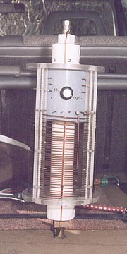

The Coil
The coil was formed from 14 gauge enamled copper motor wire. For no particular reason, it's just what was available to me at the time. There's nothing remarkable about a coil, so I tried to make this monstrosity as esthetically
pleasing as practical. It was formed around a 4 inch piece of PVC
tubing on a lathe. Running the wire through my toweled hands to bend it through an S path while winding got all the kinks out before it wound around the mandrel. It was later layed out on the Lexan spreaders around the frame. The basic coil form consists of four Lexan strips 3/8' square. Each strip had half round slots routed into them at 1/4" spacing using a Dremel and a ball tipped router. The coil windings are sandwiched between two of these strips. The strips are then held together with 4-40 brass machine screws. The formed coil is then held together by Lexan plates top and bottom into which four 3/4" slots are cut every 90 degrees.
Since I didn't want the mechanical stresses to be on the coil form, I inserted a section of 2" PVC pipe through the assembly. On each end of this is a PVC to 1 1/2" pipe fitting. These are fixed to the PVC with 6 6-32 stainless screws to permit removal. Into each cap I screwed in a pipe plug. PVC on top and brass on the bottom (for extra strength). Each of these is fitted with a 3/8-24 threaded stud with a nut inside and a 3/8-24 female coupling for the mast and radiator outside. These were also drilled to accept a 6-32 screw for the coil connections, which doubles to prevent the coupling from screwing off the rods, since the screw goes all the way though the coupling and the stud
A 4" PVC sleeve is mounted in the top of the coil form to accomodate the band switch. The band switch is located on top only to prevent the weather from getting in. A little weather does still get in through the open bottom but that doesn't seem to be a problem. The band switch was dipped in hot wax before mounting to protect the porcelin from becoming contaminated with conducting gunk. The first bandswitch arced on me before I did this. This new switch has been in there for over 7 years without a single arc since I dipped it.
The feed from the base goes directly to the coil bottom and on to the switch common. The switch positions pick up the tapped coil locations thereby shorting the unused turns. When first tried with the unused turns open, the frequency stability suffered quite a bit. This arrangment maintains resonance extremely well. Bandwidth on 75m is about 9 KHz, beyond that another tap must be selected for use without a tuner. But with 10 positions on the switch that's not a problem. I usually throw the tuner in when moving and switch taps at the next stop light. Quick and easy! The unused turns are also on the cold (low voltage) side of the coil and add little to the capacitive loading of the antenna as they would if they were on the "hot" top end.
The top of the coil goes directly to the radiator. Taps are taken from the exterior of the coil to the switch positions which have been brought through the switch tube to permit all tap wiring to be made from the outside without disassembly. The taps were selected by trial and error, although the second approximation was usually only a hair off the final mark. This leads me belive that there aren't a lot of significant stray factors affecting the coils inductance. The 75 meter tap is clearly visible running down the front in this picture. On 75m 60% of the coil is used. The full coil resonates about 2.2 MHz. I suspect a capacity hat on the radiator might get me into the 160m band. Maybe I'll try that someday.
Simple schematic
Note that the top 5 windings are double spaced. This is the twenty meter section of the coil which required additional decoupling between windings to resonate on twenty.
When the antenna is not on the car I replace the coil with a female 3/8-24 cap and leave the mast and bracket in place. Although these come off easily enough when I go trekking through heavily wooded areas during hunting season. I'd remove the mirrors too if I could, so this isn't any negative remark about the strength of the mounts. I just tend to crash through woods without benefit of roads.
The mast is mounted on a 1/4" inch steel bracket which is bolted to the vehicle frame. This bracket is duplicated on both sides of the vehicle allowing mounting on either side. Although this antenna stays on the left since bridge clearances are almost always highest near the center of the road. I hit a lot of bridges and tree limbs too.
Next Page
|
Back to Main Page
{kind=link}